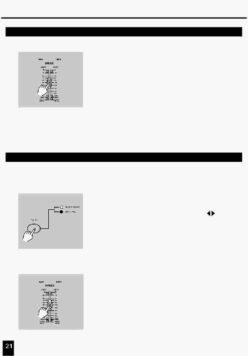

2. Опис інструкцій
2.3.3 Запуск Програми з повзунка швидкості (Speed)
4. Тепер Ви можете перемістити повзунок Speed
для вибору необхідної швидкості.
ПРИМІТКА:
Пункт 3 не потрібний, якщо обрана Програма не
записана зі стандартним ударом (Standard Beat).
2.3.4 Запуск Програми зі стандартним тактом (Standard Beat)
1. Переконайтеся, що Audio відключено. Натисніть кнопку
2.
Натисніть кнопку Park для вибору режиму Mix Chase,
засвітиться відповідний індикатор.
3.
Виберіть Програму як описано вище.
4.
Переміщайте повзунок Speed до необхідного значення,
що Ви можете прочитати на цифровому дисплеї.
Ви можете двічі нажати кнопку Tap Sync для визначення
часу такту.
SCENE.
Select для вибору режиму CHNS